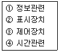
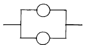
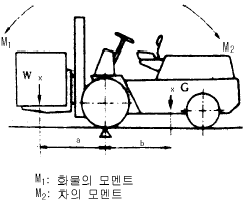
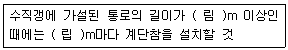

1과목: 산업안전관리론
1. 작업태도 분석에 의한 동기 파악방법의 연구과정은?
2. 다음중 재해 방지 기본 원칙중 해당되지 않는 것은?
3. 재해코스트에서 직접비는 다음중 어느 것인가?
4. 피로측정방법 중 정신적 변화를 이용한 측정방법은?
5. 안전을 위한 동기부여로 옳지 않은 것은?
6. 조직의 환경상태가 불확실 할 때 리더쉽의 유형이 어떤형이 될 것인가?
7. 버드(Frank Bird)의 재해 발생 이론에서 첫번째 요인인 제어의 부족 내용에 해당되지 않는 것은?
8. 안전교육 과정 중 "할 수 있다"라는 즉 피교육자가 그것을 스스로 행함으로서만 얻어지는 교육내용에 해당하는 것은?
9. Hershey A.B의 피로대책의 원칙 중 단조로움, 권태감에 의한 피로대책은?
10. 흰색 바탕에 빨간색 기본모형의 안전, 보건 표지판의 종류는 어느 것인가?
11. 연간 근로 총시간수가 58만 시간이고 이 기간중에 휴업재해가 7건 발생했다. 도수율은?
12. 다음 중 학습에 직접적인 영향을 미치는 요인이 아닌 것은?
13. 에너지 대사율(R.M.R)이 높은 작업의 경우 사고예방 대책은 어느 것인가?
14. 연간 평균 근로자수가 1000명을 채용하고 있는 사업장에서 연간 6건의 재해가 발생한다고 할 때 빈도율은 ? (단, 일일 근로시간수는 4시간, 연평균근로일수는 150일)
15. 문제해결 4단계에서 대책 수립 몇 단계는?
16. 다음 중 수강자와 교재 중심의 개별학습이 아닌 것은?
17. 교육과제에 정통한 전문가 4∼5명이 피교육자 앞에서 자유로이 토의를 실시한 다음에 피교육자 전원이 참가하여 사회자의 사회에 따라 토의하는 방식에 해당되는 것은?
18. 다음 중 안전점검의 목적과 관계가 가장 적은 것은?
19. 안전모의 성능시험항목에 따른 성능기준이 종류 AE, ABE종 안전모는 질량 증가율이 1% 미만이어야 하는 항목은?
20. 안전관리 조직의 기본 방식이 아닌 것은?
2과목: 인간공학 및 시스템안전공학
21. 인간-기계통합 체계에서 인간 또는 기계에 의해서 수행되는 4가지 기본 기능 중 다른 세가지 기능 모두와 상호작용 하는 것은?
22. 조명강도를 높인 결과 작업자들의 생산성이 향상되었고 그후 다시 조명강도를 낮추어도 생산성의 변화는 거의 없었다. 라는 결과는 다음중 어느 실험의 결과인가?
23. 제품을 안전하게 만드는 기본 수법과 거리가 먼 것은?
24. 다음 중 귀납적이고 정량적인 위험분석방법은?
25. 인간과 기계능력에 대한 실용성 한계에 대한 내용과 거리가 먼 것은?
26. Fail safe와 거리가 가장 먼 것은?
27. 시스템 퍼포먼스(SP)와 휴먼에러(HE)와의 관계는 SP=f(HE)=K(HE)로 나타낸다. (단, f:함수, K:상수)다음중 휴먼에러가 시스템 퍼포먼스에 대하여 중대한 영향을 일으키는 것은?
28. 다음 기계조작시 출력응답에 속하는 반응은?
29. 시스템 안전분석 기법중 시스템 디자인 단계에서 처음으로 사용되는 것은?
30. 인간-기계 기능계 체계에서 기능에 형태에 속하지 않는 것은?
31. 위험 및 운전성 검토(HAZOP)에서 성질상의 감소를 나타내는 유인어(guide words)는?
32. 숫자,영문자,기하학적 형상,구성중 암호로서의 성능이 가장 좋은 것부터의 순서의 배열은?
33. 제어장치의 레바를 2cm 이동시켰더니 표시장치의 지침이 8cm 이동하였다. 이 계기의 통제표시비(C/D)는 얼마인가?
34. 작업장 소음의 영향과 거리가 먼 것은?
35. 다음중 인간 기계 시스템에서의 신뢰도 유지방안이 아닌것은?
36. 인간-기계 시스템(man-machine system)에서 조작상 인간 에러발생 빈도수의 순서로 맞는 것은?

37. 위험작업분석시 고려해야 할 사항이 아닌 것은?
38. 인간공학에서 사용되는 인간기준의 4가지 유형에 속하지 않는 것은?
39. 고장율이 λ 인 지수분포를 갖는 동일한 두 개의 독립적인 부품의 병렬구조 시스템의 신뢰도는 얼마인가?

40. 어떤 결함수의 쌍대결함수를 구하여 컷셋을 구하면 이 컷셋은 본래 결함수의 무엇에 해당되는가?
3과목: 기계위험방지기술
41. 다음 중 리밋트 스위치(limit switch)에 의한 안전장치가 아닌 것은?
42. 직경 30mm인 연강을 선반에서 절삭할 때 스핀들 회전수는 ?(단, 절삭속도는 20m/min이다.)
43. 톱위 뒷(back)날 바로 가까이에 설치되고 절삭된 가공재의 홈사이로 들어가면서 가공재의 모든 두께에 걸쳐 쐐기 작용을 하여 가공재가 톱자체를 조이지 않게 하는 안전장치는?
44. 압력용기 및 부속품으로 사용하는 재료의 허용인장응력은 철강재료의 최대사용온도가 350℃이하인 경우에 페라이트계 강재의 최대허용응력에 대한 최소값 중에 사용하도록 되어 있다. 틀린 것은?
45. 보일러에서 스켈(scale)의 악영향으로 가장 적합한 것은?
46. 롤러의 맞물림전 전방에 개구 간격 30mm의 가드를 설치하고자 한다. 개구면에서 위험점 까지의 최단거리(mm)는 ? (단, I.L.O.기준에 의해 계산한다.)
47. 한계하중 이하의 하중이라도 일정하중을 지속적으로 가하면 시간의 경과에 따라 변형이 증가하고 결국은 파괴에 이르게 되는 현상을 무엇이라 하는가?
48. 안전율(허용응력) 결정시 고려해야 할 사항에 속하지 않는 것은?
49. 취급운반의 5원칙 중 관계가 먼 것은?
50. 그림과 같은 포오크리프트에서 W를 화물중량, G를 지게차 자체중량, a를 앞바퀴부터 화물의 중심까지의 최단거리, b를 앞바퀴 중심에서 지게차의 중심까지의 최단거리라고 할 때 지게차 안정조건은 ?(단, W:화물중량, G:차량의 중량, a:전차륜에서 화물의 중심까지의 최단 거리, b:전차륜에서 차량의 중심까지의 최단거리) (복원 오류로 보기 내용이 정확하지 않습니다. 내용을 아시는분께서는 오류 신고를 통하여 내용 작성부탁 드립니다. 정답은 1번입니다.)

51. 가공기계의 방호조치에서 반드시 방호장치를 설치하지 않아도 되는 것은?
52. 선반작업시 사용되는 방호장치는?
53. 다음은 안전율을 구하는 식이다. 틀린 것은?
54. 밀링작업에서 커터날의 개수가 10매, 직경이 100㎜, 날하나에 대한 이송이 0.4㎜이며 절삭속도 90m/min으로 연강재를 절삭하는 경우 테이블의 이송속도는?
55. 행정길이가 40mm 이상의 프레스에 적당한 방호장치의 종류는?
56. 산업용 로봇의 방호장치로 옳은 것은?
57. 동력 전달장치의 방호대책 중 틀린 것은?
58. 로울러기의 급정기를 위한 방호장치를 설치하고자 한다. 앞면 로울러의 직경이 30㎝, 회전속도가 40(m/min)이라면 어떤 성능이 급정지 장치를 부착해야 하는가?
59. 동력에 의하여 작동되는 기계.기구 중 회전기계 물림점에 대하열 방호조치를 하여야 한다. 방호장치로 옳은 것은?
60. 재료의 강도시험 중 인장시험으로 알 수 없는 기계적 성질은?
4과목: 전기 및 화학설비위험방지기술
61. 관을 지나는 유체의 온도변화로 인해 일어나는 배관의 변형을 방지하기 위해 설치하는 관 부속품이 아닌 것은?
62. 폭발 상한계가 100%인 가스를 설명한 것 중 올바르지 못한 것은?
63. 다음의 내용중 단위조작(물리적공정)에 해당되는 것은?
64. 고압용 비포장퓨즈(고리형퓨즈)의 구성요소가 아닌 것은?
65. 폭발성 물질의 성질을 나타낸 것으로 옳은 것은?
66. 일반적으로 전기 기기의 누전으로 인한 감전 재해의 방지 대책으로서 해당 없는 것은?
67. 증류탑의 운전을 개시하기 직전의 탑내의 잔류산소는 몇 % 이하로 해야 하는가?
68. 분진폭발이 일어나지 않는 물질은?
69. 정전기의 발생에 영향을 주는 요인중에서 가장 관계가 먼 것은?
70. 폭발성물질의 폭발을 일으키는 팽창력의 원인이 되는 것은?
71. 정전기의 재해방지대책 중에서 제전기의 종류와 특성에서 틀린 것은 ? (순서대로 구분-전압인가식-자가방정식-방사선식)
72. 다음은 분진에 대한 방폭구조의 설명이다. 틀린 것은?
73. 방적공장의 난방용 스팀파이프에 분진이 퇴적되어 있었다. 한겨울에 난방용스팀을 공급한지 몇 일이 지났을 때 스팀파이프의 퇴적된 분진에서 연기가 발생하였다. 이 때 점화원으로 예상할 수 있는 것은?
74. 전기화재 방지를 위한 안전조치와 관련이 없는 것은?
75. 최소 착화에너지가 0.25(mJ)인 부탄가스 버너의 극간 정전 용량이 10(PF)일 경우에 이 버너를 점화시키기 위해서는 최소한 얼마 이상의 전압을 인가해야 하는가?
76. 물이나 기름 또는 화학약품을 많이 사용하는 작업장의 바닥(마루)의 재료로 가장 알맞는 것은?
77. 전기불꽃이나 과열에 대해서 회로특성상 폭발의 위험을 방지할 수 있는 방폭구조는?
78. 습기가 많은 작업장, 욕실등에서 누전등에 의한 감전 위험을 에방하기 위한 이동용 전선으로서 적합한 것은?
79. 연소의 3요소가 아닌 것은?
80. 다음 중금속의 먼지중 비중격 천공을 잘 일으키는 중금속은?
5과목: 건설안전기술
81. 도갱의 중앙부에서 최초로 폭발시키는 구멍을 무엇이라 하는가?
82. 다음 중 승강기의 종류에 해당하지 않는 것은?
83. 다음 중 블리딩(Bleeding)이 발생하는 원인은?
84. 다음 중 양중기의 종류에 해당하지 않는 것은?
85. 보통 흙의 굴착공사에서 굴착높이가 5m, 굴착기초면의 폭이 5m인 경우 양단면 굴착을 할 때 상부 단면의 폭은 ? (단, 굴착구배는 1:1로 한다)
86. 철근콘크리트에 있어서 부착응력에 대하여 검토해야 할 철근은?
87. 낙하물 방지설비 중 제3자 보호설비가 아닌 것은?
88. 토사붕괴의 외적원인이 아닌 것은?
89. 크레인이 가공전선로에 접촉하였을 때 운전자의 조치사항으로 틀린 것은?
90. 낙하물 방지를 위하여 비계의 외부에 설치하는 방호선반의 내민길이와 수평면에 대한 각도는 각각 얼마인가?
91. 비계 작업발판의 최대 적재하중에 관한 규정 중 달기 체인 및 달기 후크의 안전계수는?
92. 다음 중 고정사다리 설치시 수평면에 대한 경사각으로 가장 적합한 것은?
93. 다음 중 사면이 가장 위험한 때는 언제인가?
94. 철골공사 중 리벳치기나 볼트작업을 하기 위하여 구조체인 철골에 매어달아 작업발판을 만드는 비계로서 상하 이동을 시킬수 없는 것은?
95. 도심지에서 주변에 주요시설물이 있을 때 침하와 변위를 적게할 수 있는 적당한 흙막이 공법은?
96. 지붕 및 슬래브 지주의 존치기간은 콘크리트의 압축강도가 설계기준강도의 몇 %를 발휘할 때까지 존치시켜야 하는가?
97. 통나무 비계는 강관비계보다 안전상 취약하다. 통나무 비계의 사용을 제한해야 하는 지상 높이는?
98. 콘크리트 거푸집을 설계할 때 고려해야 하는 연직하중으로 거리가 먼 것은?
99. 다음 ( ) 안에 알맞는 수치는?

100. 굴착면 붕괴의 원인과 관계가 먼 것은?